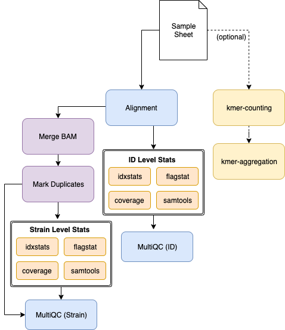

alignment-nf¶
The alignment-nf pipeline performs alignment for wild isolate sequence data at the strain level, and outputs BAMs and related information. Those BAMs can be used for downstream analysis including variant calling, concordance analysis, wi-nf (variant calling) and other analyses.
This page details how to run the pipeline and how to add new wild isolate sequencing data.
Note
Historically, sequence processing was performed at the isotype level. We are still interested in filtering strains used in analysis at the isotype level, but alignment and variant calling are now performed at the strain level rather than at the isotype level.
Usage¶
▗▖ ▝▜ ▝ ▗ ▗▖ ▖▗▄▄▖
▐▌ ▐ ▗▄ ▄▄ ▗▗▖ ▗▄▄ ▄▖ ▗▗▖ ▗▟▄ ▐▚ ▌▐
▌▐ ▐ ▐ ▐▘▜ ▐▘▐ ▐▐▐ ▐▘▐ ▐▘▐ ▐ ▐▐▖▌▐▄▄▖
▙▟ ▐ ▐ ▐ ▐ ▐ ▐ ▐▐▐ ▐▀▀ ▐ ▐ ▐ ▀▘ ▐ ▌▌▐
▐ ▌ ▝▄ ▗▟▄ ▝▙▜ ▐ ▐ ▐▐▐ ▝▙▞ ▐ ▐ ▝▄ ▐ ▐▌▐
▖▐
▝▘
parameters description Set/Default
========== =========== ========================
--debug Set to 'true' to test ${params.debug}
--sample_sheet sample_sheet ${params.sample_sheet}
--fq_prefix fastq prefix ${params.fq_prefix}
--kmers count kmers ${params.kmers}
--reference Reference Genome (w/ .gz) ${params.reference}
--output Location for output ${params.output}
--email Email to be sent results ${params.email}
HELP: http://andersenlab.org/dry-guide/pipeline-alignment/
The logo above looks better in your terminal!
Pipeline Overview¶

Usage¶
Quick Start¶
Testing locally
This command uses a test dataset
NXF_VER=19.12.0-edge nextflow run main.nf --debug -profile local
Testing on Quest
This command uses a test dataset
NXF_VER=19.12.0-edge nextflow run main.nf --debug -profile quest
Running on Quest
You should run this in a screen session.
NXF_VER=19.12.0-edge nextflow run main.nf -profile quest -resume
Sample Sheet¶
The sample sheet for wild isolate data is located in the base of the alignment-nf repo and is called WI_sample_sheet.tsv. This file is generated by the scripts/construct_sample_sheet.sh script.
Remember that in --debug mode the pipeline will use the sample sheet located in test_data/sample_sheet.tsv.
The sample sheet has the following columns:
- strain - the name of the strain. Multiple sequencing runs of the same strain are merged together.
- reference_strain - reference strain
- isotype - strain isotype
- id - A unique ID for each sequencing run. This must be unique for every single pair of FASTQs.
- library - A library ID. This should uniquely identify a DNA sequencing library.
- fq1 - The path to FASTQ1
- fq2 - The path to FASTQ2
| strain | reference_strain | isotype | id | library | fq1 | fq2 | seq_folder |
|---|---|---|---|---|---|---|---|
| AB1 | FALSE | ISO1 | BGI1-RET2-AB1 | RET2 | BGI1-RET2-AB1-trim-1P.fq.gz | BGI1-RET2-AB1-trim-2P.fq.gz | original_wi_set |
| ECA243 | TRUE | ISO1 | BGI3-RET3b-ECA243 | RET3b | BGI3-RET3b-ECA243-trim-1P.fq.gz | BGI3-RET3b-ECA243-trim-2P.fq.gz | original_wi_set |
| ECA718 | TRUE | ISO2 | ECA718_RET-S16_S26_L001 | RET-S16 | ECA718_RET-S16_S26_L001_1P.fq.gz | ECA718_RET-S16_S26_L001_2P.fq.gz | 20180306_Duke_NovaSeq_6000 |
The library column is a useful tool for identifying errors by variant callers. For example, if the same library is sequenced twice, and a variant is only observed in one sequencing run then that variant may be excluded as a technical / PCR artifact depending on the variant caller being used.
Important
The alignment pipeline will merge multiple sequencing runs of the same strain into a single bam. However, summary output is provided at both the strain and id level. In this way, if there is a poor sequencing run it can be identified and removed from a collection of sequencing runs belonging to a strain.
Note
The sample sheet is a critical tool. It allows us to associated metadata with each sequencing run (e.g. isotype, reference strain, id, library). It also allows us to quickly verify that all results have been output. It is much easier than working with a list of files!
construct_sample_sheet.sh¶
The scripts/construct_sample_sheet.sh script generates the WI_sample_sheet.tsv file.
Warning
The WI_sample_sheet.tsv file should never be generated and/or edited by hand. It should only be generated using the scripts/construct_sample_sheet.tsv script.
The construct_sample_sheet.sh script does a few things.
(1) Parses FASTQ Filenames
Unfortunately, no two sequencing centers are alike and they use different formats for naming sequencing files. For example:
ECA768_RET-S11_S79_L001_2P.fq.gz [strain]_[lib_lib#]_[sample_#]_[lane]_[read].fq.gz
XZ1734_S573_L007_2P.fq.gz [strain]_[sample_#]_[lane]_[read].fq.gz
In some cases they even changed formats over time!
The script parses the FASTQ filenames from different sequencing centers, extracting the strain name, and a unique ID. Note that the library and unique sequencing run ID (id) are named somewhat arbitrarily. The most imporant aspect of these columns is that any DNA library that has been sequenced multiple times possess the same library, and that every pair of FASTQs possess a unique sequencing ID.
Consider the following (fake) example:
| strain | isotype | reference_strain | id | library |
|---|---|---|---|---|
| AB1 | AB1 | TRUE | BGI2-RET2-AB1 | RET2 |
| AB1 | AB1 | TRUE | BGI2-RET3-AB1 | RET3 |
| AB4 | CB4858 | FALSE | BGI1-RET2-AB4 | RET2 |
| AB4 | CB4858 | FALSE | BGI2-RET2-AB4 | RET2 |
AB1 was sequenced twice, however two different DNA libraries were produced for each sequencing run (RET2 and RET3). AB4 was also sequenced twice, but both sequencing runs were of the same DNA library (called RET2). Note that the id column is always unique across all sequencing runs.
If you look at the WI_sample_sheet.tsv in more detail you will observe that the id and library columns are not consistantly named. This is not ideal, but it works. The inconsistancy does not affect analysis, and exists because the filenames are not consistant, but unique library and sequencing run IDs must be derived from them.
(2) Clean up strain names
The second thing the construct_sample_sheet.sh script does is that it replaces shorthand strain names or innapropriately named strains with the 3-letter system. For example, N2Baer is renamed to ECA254.
(3) Integrate metadata
The C. elegans WI Strain Info google spreadsheet is a master spreadlist containing every strain, reference_strain, and isotype for C. elegans wild isolates. The script downloads this dataset and uses it to integrate the isotype and reference strain into the sample sheet.
Adding new sequencing datasets¶
Sequencing data should be added to QUEST and processed through the trimming pipeline before being added to WI_sample_sheet.tsv. Before proceeding, be sure to read pipeline-trimming
To add new sequencing datasets you will need to devise a strategy for extracting the strain name, a unique ID, and sequencing library from the FASTQ filenames. This may be the same as a past dataset, in which case you can append the sequencing run folder name to the list with that format. Alternatively, you may need to create a custom set of bash commands for generating the rows corresponding to each FASTQ pair.
Here is an example from the construct_sample_sheet.sh script.
#===================================#
# BGI-20161012-ECA23 #
#===================================#
out=`mktemp`
seq_folder=BGI-20161012-ECA23
>&2 echo ${seq_folder}
prefix=${fastq_dir}/WI/dna/processed/$seq_folder
for i in `ls -1 $prefix/*1P.fq.gz`; do
bname=`basename ${i}`;
barcode=`zcat ${i} | grep '@' | cut -f 10 -d ':' | sed 's/_//g' | head -n 100 | uniq -c | sort -k 1,1n | cut -c 9-100 | tail -n 1`
echo -e "${bname}\t${i}\t${barcode}" >> ${out}
done;
cat ${out} |\
awk -v prefix=${prefix} -v seq_folder=${seq_folder} '{
fq1 = $1;
fq2 = $1;
LB = $3;
gsub("N", "", LB);
gsub("1P.fq.gz", "2P.fq.gz", fq2);
ID = $1;
gsub("_1P.fq.gz", "", ID);
split(ID, a, "[-_]")
SM=a[2];
print SM "\t" ID "\t" LB "\t" prefix "/" fq1 "\t" prefix "/" fq2 "\t" seq_folder;
}' >> ${fq_sheet}
Notes on this snippet:
SM=strain,LB=library, andID=idin the final output file.- The sequencing run is listed in the comment box at the top.
- Barcodes are extracted from each FASTQ in the first forloop. These are used to define the
library. - The
idis defined using the basename of the file. - A final column corresponding to the
seq_folderis always added.
Profiles and Running the Pipeline¶
There are three configuration profiles for this pipeline.
local- Used for local development.quest- Used for running on Quest.gcp- For running on Google Cloud.
Software¶
Almost all processes within the pipeline are now managed using conda. To use the pipeline, you must have conda installed and available. Nextflow will take care of installing conda environments and managing software.
Note
mosdepth is used to calculate coverage. mosdepth is available on Linux machines, but not on Mac OSX. That is why the conda environment for the coverage process is specified as conda { System.properties['os.name'] != "Mac OS X" ? 'bioconda::mosdepth=0.2.6' : "" }. This snippet allows mosdepth to run off the executable present in the bin folder locally on Mac OSX, or use the conda-based installation when on Linux.
Parameters¶
--debug¶
You should use --debug true for testing/debugging purposes. This will run the debug test set (located in the test_data folder) using your specified configuration profile (e.g. local / quest / gcp).
For example:
nextflow run main.nf -profile local --debug -resume
Using --debug will automatically set the sample sheet to test_data/sample_sheet.tsv
--sample_sheet¶
A custom sample sheet can be specified using --sample_sheet. The sample sheet format is described above in sample sheet
When using --debug true, the test_data/sample_sheet.tsv file is used.
Note
Previously this option was specified using --fqs.
--fq_prefix¶
Within a sample sheet you may specify the locations of FASTQs using an absolute directory or a relative directory. If you want to use a relative directory, you should use the --fq_prefix to set the path that should be prefixed to each FASTQ.
Note
Previously, this option was --fqs_file_prefix
--kmers¶
default = true
Toggles kmer-analysis
--reference¶
A fasta reference indexed with BWA. WS245 is packaged with the pipeline for convenience when testing or running locally.
On Quest, the reference is available here:
/projects/b1059/data/genomes/c_elegans/WS245/WS245.fa.gz
--output¶
Default - Alignment-YYYYMMDD
A directory in which to output results. If you have set --debug true, the default output directory will be alignment-YYYYMMDD-debug.
--email¶
Setting --email will trigger an email report following pipeline execution.
Output¶
Strain¶
├── _aggregate
│ ├── kmers.tsv
│ └── multiqc
│ ├── id_data/
│ │ ├── ... (same as strain_data/)
│ ├── id_multiqc_report.html
│ ├── strain_data/
│ │ ├── mqc_mosdepth-coverage-dist-id_1.txt
│ │ ├── mqc_mosdepth-coverage-per-contig_1.txt
│ │ ├── mqc_mosdepth-coverage-plot-id_1.txt
│ │ ├── mqc_picard_deduplication_1.txt
│ │ ├── mqc_samtools-idxstats-mapped-reads-plot_Counts.txt
│ │ ├── mqc_samtools-idxstats-mapped-reads-plot_Normalised_Counts.txt
│ │ ├── mqc_samtools_alignment_plot_1.txt
│ │ ├── multiqc.log
│ │ ├── multiqc_data.json
│ │ ├── multiqc_general_stats.txt
│ │ ├── multiqc_picard_dups.txt
│ │ ├── multiqc_qualimap_bamqc_genome_results.txt
│ │ ├── multiqc_samtools_flagstat.txt
│ │ ├── multiqc_samtools_idxstats.txt
│ │ ├── multiqc_samtools_stats.txt
│ │ └── multiqc_sources.txt
│ └── strain_multiqc_report.html
├── bam
│ ├── [strain].bam
│ └── [strain].bam.bai
├── coverage
│ ├── id
│ │ ├── [id].mosdepth.global.dist.txt
│ │ ├── [id].mosdepth.summary.txt
│ │ ├── [id].per-base.bed.gz
│ │ └── [id].per-base.bed.gz.csi
│ └── strain
│ ├── [strain].mosdepth.global.dist.txt
│ ├── [strain].mosdepth.summary.txt
│ ├── [strain].per-base.bed.gz
│ └── [strain].per-base.bed.gz.csi
├── software_versions.txt
└── summary.txt
Most files should be obvious. A few are detailed below.
- software_versions.txt - Outputs the software versions used for every process (step) of the pipeline.
- summary.txt - Outputs a summary of the parameters used.
- sample_sheet.tsv - The sample sheet that was used to produce the alignment directory.
- strain_sheet.tsv - A summary of all strains and bams in the alignment directory.
- aggregate - Stores data that has been aggregated across all strains or sequencing IDs.
- coverage - Contains coverage data at the strain or id level, presented in a variety of ways.